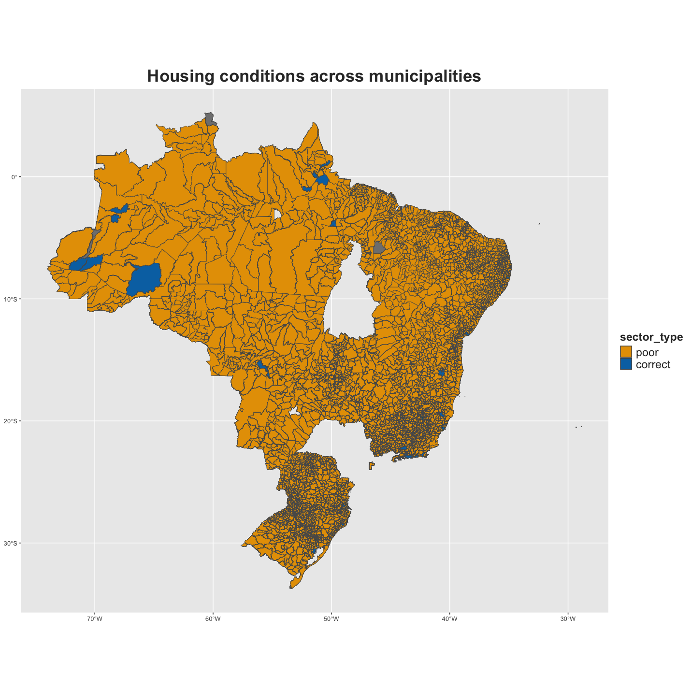
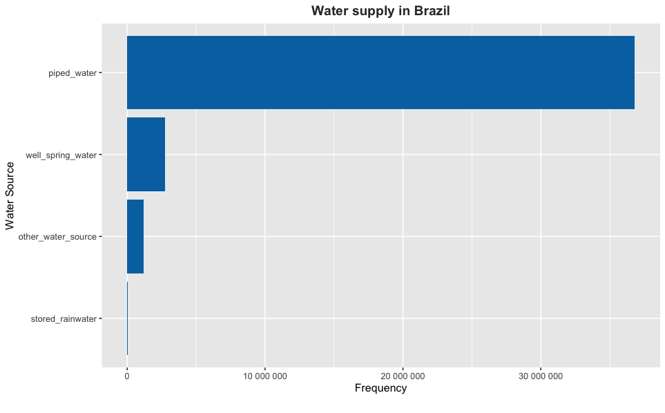

This package contains information related to wastewater management practices and household infrastructure in Brazil. It includes variables such as sector codes, metropolitan region names, municipality codes, and names, as well as data on the location type, living conditions, average income, and household amenities. The data provides insights into wastewater disposal habits, water supply sources, bathroom facilities, and sanitation infrastructure in Brazilian households, contributing to understanding environmental sustainability and infrastructure development efforts. “Atlas of the 2010 Demographic Census - PGI” (n.d.)  Based on the data, it appears for example that most of the municipalities exhibits poor housing conditions. In this dataset, housing conditions are represented numerically, with ‘1’ indicating correct housing conditions and ‘0’ indicating poor housing conditions. The location map displays all Brazilian municipalities from which data has been collected.
Installation
You can install the development version of wsabrazil from GitHub with:
# install.packages("devtools")
devtools::install_github("openwashdata/wsabrazil")Alternatively, you can download the dataset as a CSV or XLSX file from the table below.
| dataset | CSV | XLSX |
|---|---|---|
| wsabrazil | Download CSV | Download XLSX |
Data
The dataset includes observations of wastewater management practices and household infrastructure (access to water and sanitation services) across various regions in Brazil.
The package provides access to one single dataset.
library(wsabrazil)The wsabrazil dataset has 33 variables and 192896 observations. For an overview of the variable names, see the following table.
wsabrazil| variable_name | variable_type | description |
|---|---|---|
| sector_code | double | Sector code |
| great_region_name | character | Name of the great region |
| FU_code | integer | Federation unit code |
| FU_name | character | Federation unit name |
| meso_code | integer | Mesoregion code |
| meso_name | character | Mesoregion name |
| micro_code | integer | Microregion code |
| micro_name | character | Microregion name |
| MR_code | integer | Metropolitan region code |
| MR_name | character | Metropolitan region name |
| municipality_code | integer | Municipality code |
| municipality_name | character | Municipality name |
| district_code | integer | District code |
| district_name | character | District name |
| subdistrict_code | integer | Subdistrict code |
| subdistrict_name | character | Subdistrict name |
| neighb_code | integer | Neighborhood code |
| neighb_name | character | Neighborhood name |
| sector_situation | character | Location type: urban or rural |
| sector_type | integer | Living conditions: 1 stands for correct housing conditions, 0 stands for poor housing conditions |
| avg_income | integer | Average nominal monthly income of permanent private households |
| total_households | integer | Number of permanent private households |
| piped_water | integer | Number of permanent private households with water supply by piped network |
| well_spring_water | integer | Number of permanent private households with water supply by property’s well or spring |
| stored_rainwater | integer | Number of permanent private households with water supply by stored rainwater |
| other_water_source | integer | Number of permanent private households with water supply by other source |
| private_bathroom | integer | Number of permanent private households with private bathroom or toilet |
| bathroom_sewerage | integer | Number of permanent private households with private bathroom or toilet & sanitation via sewerage or drainage network |
| bathroom_septic_tank | integer | Number of permanent private households with private bathroom or toilet & sanitation via septic tank |
| bathroom_cesspit | integer | Number of permanent private households with private bathroom or toilet & sanitation via cesspit |
| bathroom_ditch | integer | Number of permanent private households with private bathroom or toilet & wastewater discharged into ditch |
| bathroom_waterbodies | integer | Number of permanent private households with private bathroom or toilet & wastewater discharged into water bodies (river, lake or sea) |
| bathroom_other | integer | Number of permanent private households with private bathroom or toilet & wastewater discharged into other outlet |
Examples
1. Housing conditions across municipalities
The location map displayed above was created as follows:
library(wsabrazil)
library(ggplot2)
library(sf)
library(dplyr)
shapefile <- st_read("man/gadm41_BRA_2.json")
merged_data <- merge(shapefile, wsabrazil, by.x = "CC_2", by.y = "municipality_code")
# Plot the choropleth map
ggplot() +
geom_sf(data = merged_data, aes(fill = as.factor(sector_type))) +
scale_fill_manual(name = "sector_type", values = c("0" = "#E69F00", "1" = "#0072B2"),
labels = c("0" = "poor", "1" = "correct")) +
labs(title = "Housing conditions across municipalities") +
theme(plot.title = element_text(hjust = 0.5, face = "bold", color = "#333333", size = 24),
legend.title = element_text(face = "bold", color = "#333333", size = 16),
legend.text = element_text(color = "#333333", size = 16))2. Water supply in Brazil
From the dataset, we can also explore the distribution of water sources in the whole country. We create here a horizontal bar plot to visualize the frequency of different water sources available, utilizing variables such as piped water or stored rainwater. We observe from the resulting plot (see Figure below) that the majority of private households are supplied by piped water. Interestingly, almost none of the households store rainwater. This is possibly due to factors such as local climate patterns and infrastructure limitations.
library(dplyr)
library(ggplot2)
library(wsabrazil)
library(tidyr)
data_long_summary <- wsabrazil |>
pivot_longer(cols = piped_water:other_water_source,
names_to = "water_source",
values_to = "frequency") |>
group_by(water_source) |>
summarise(total_frequency = sum(frequency, na.rm = TRUE)) |>
arrange(total_frequency)
# Create a horizontal bar plot of water source types
plot <- ggplot(data_long_summary, aes(x = total_frequency, y = reorder(water_source, total_frequency))) +
geom_col(fill = "#0072B2") +
labs(x = "Frequency", y = "Water Source",
title = "Water supply in Brazil",
caption = "") +
theme(plot.title = element_text(hjust = 0.5, face = "bold", color = "#333333"))
plot + scale_x_continuous(labels = scales::number_format())
License
Data are available as CC-BY.
Citation
To cite this package, please use:
citation("wsabrazil")
#> To cite package 'wsabrazil' in publications use:
#>
#> Götschmann M, Santos L (2024). "wsabrazil: Wastewater management and
#> household infrastructure in Brazil."
#>
#> A BibTeX entry for LaTeX users is
#>
#> @Misc{gotschmann_etall:2024,
#> title = {wsabrazil: Wastewater management and household infrastructure in Brazil},
#> author = {Margaux Götschmann and Lais Santos},
#> year = {2024},
#> abstract = {This dataset about wastewater management and household infrastructure from various Brazilian regions provides insights into wastewater disposal habits, water sources, bathroom facilities, and sanitation infrastructure.},
#> version = {0.0.0.9000},
#> }